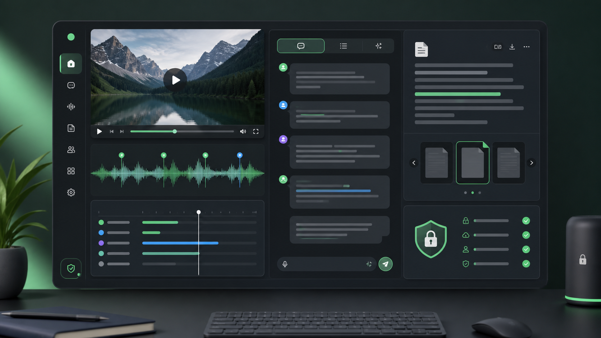

多平台链接
YouTube、B站、小宇宙 FM、飞书妙记、音视频直链都可进入转写流程。
公开展示页 · 不连接真实 API
支持 YouTube、B站、小宇宙 FM、飞书妙记和音视频文件。这个页面只展示功能、规范和模拟体验，不读取你的飞书、Hermes、密钥或本地文件。

Capability Map
YouTube、B站、小宇宙 FM、飞书妙记、音视频直链都可进入转写流程。
下载媒体，上传飞书云空间，创建飞书妙记，读取逐字稿，生成 Markdown 和飞书文档。
带上“定时处理”或“加入队列”，链接会进入每天上午 9 点自动处理队列。
Simulated Feishu Chat
选择一个样例输入，右侧会模拟 Jetty 的回复过程。这里不会下载视频、创建妙记，也不会生成真实文档。
Workflow
用户在私聊或群聊里发送链接、文件，或发送“定时处理 + 链接”。
识别平台类型，调用 yt-dlp 下载媒体，保留到本地下载目录。
把媒体上传飞书云空间并创建妙记，等待逐字稿生成。
输出 Markdown 文件和飞书在线文档，并把链接发回目标会话。
Rules
How To Use
@jetty https://www.bilibili.com/video/BVxxxx@jetty 定时处理 https://www.xiaoyuzhoufm.com/episode/xxxx@jetty 加入队列 https://www.youtube.com/watch?v=xxxxProof
群聊收到小宇宙 FM 链接。
音频下载完成，上传飞书云空间并创建飞书妙记。
生成 Markdown 和飞书文档，向目标群返回链接。
转录完成，已生成干净逐字稿。 Markdown 文件：https://my.feishu.cn/file/脱敏样例 飞书文档：https://my.feishu.cn/docx/脱敏样例